2-in-1 Slow Feeder Bowl & Lick Tray
342×177×68mm · Anti-spill tray · SKU LM-020
View Product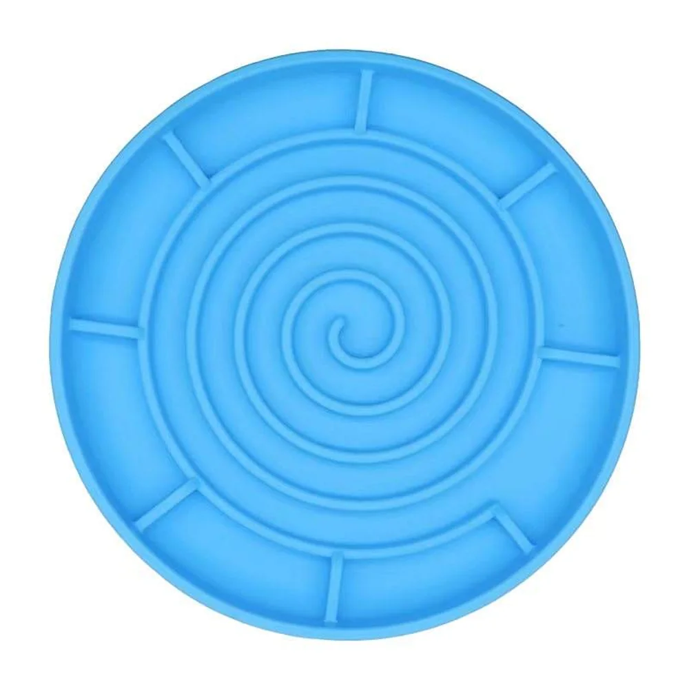
Suction Cup Silicone Slow Feeder Bowl
Request a Quote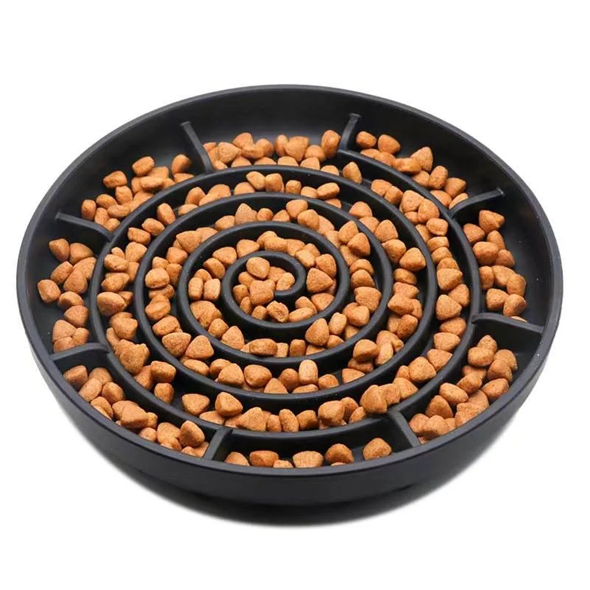
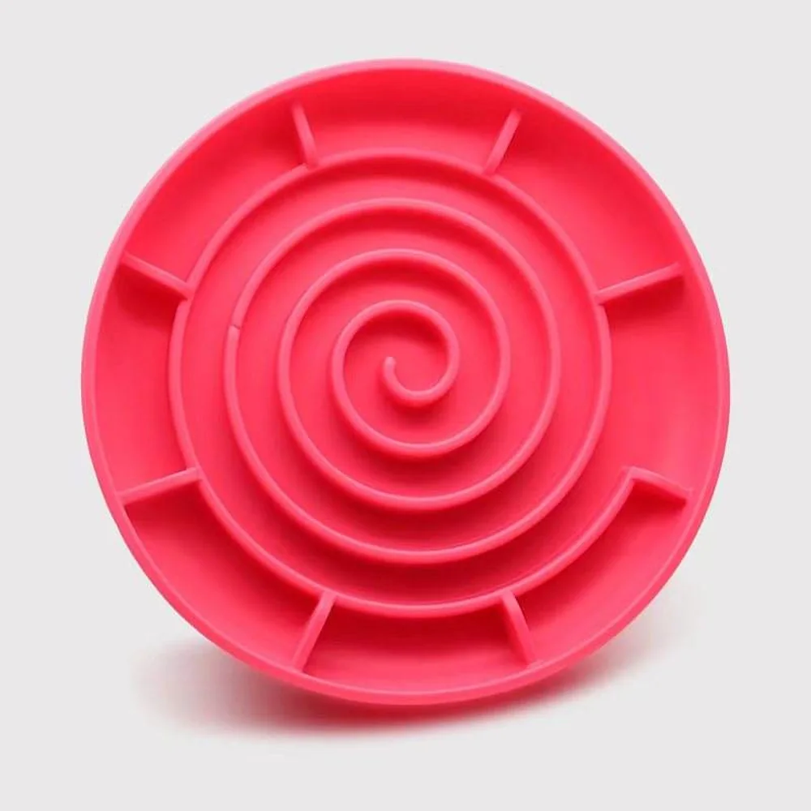
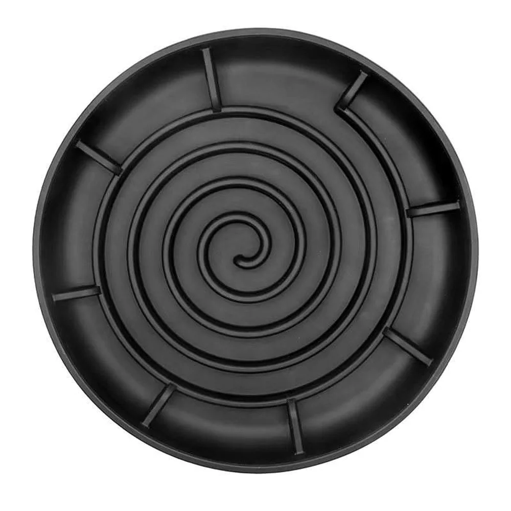
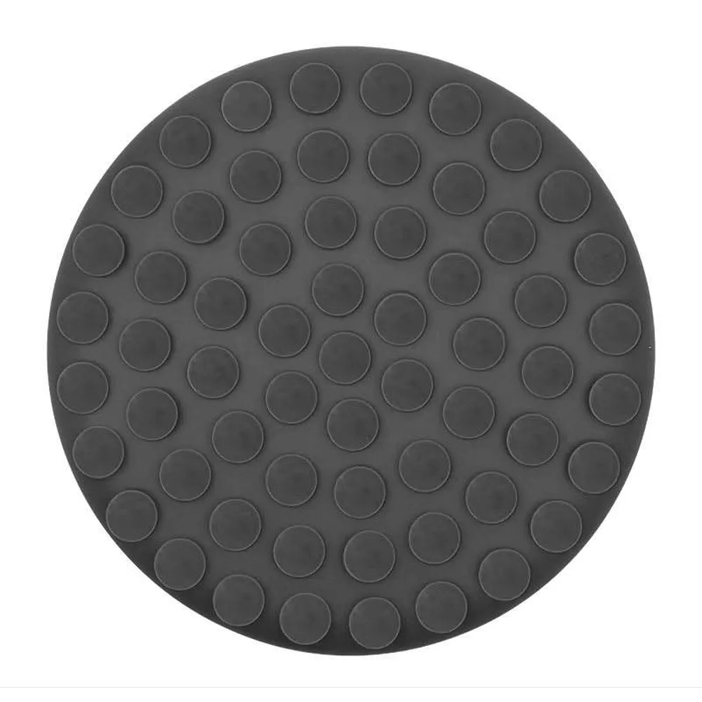
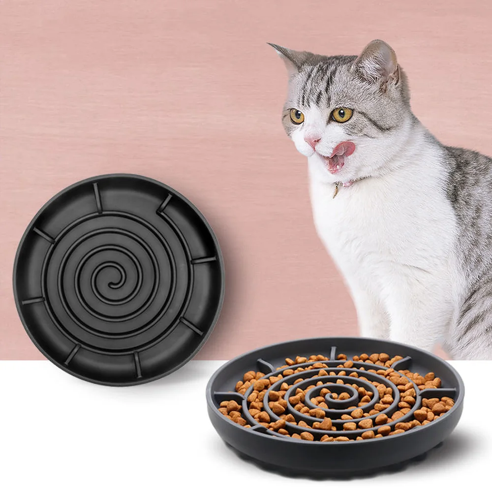
Available in 7 colors: Black, Dark Grey, Blue, Light Blue, Turquoise, Green, Red. Custom colors available for OEM orders.
| Material | Food-contact grade silicone (BPA-free) |
|---|---|
| Size | 205 x 205 x 30 mm (20.5 x 20.5 x 3 cm) |
| Weight | Approx. 239 g |
| Colors | Black, Dark Grey, Blue, Light Blue, Turquoise, Green, Red |
| MOQ | From 10 pcs (stock colours) · custom colour or logo quoted on request |
| Sample Lead Time | Approx. 7 days |
| Production Lead Time | 15–25 days after sample approval |
| Customization | Logo, color, packaging available |
| Material reports | LFGB / FDA / REACH - silicone parts; reports on request |
| Interior | Raised spiral wall with radial ribs around the rim |
| Base | Suction cups moulded across the full underside |
| Best For | Cats and small to medium dogs; dry kibble, wet food and spreads |
| Care | Dishwasher safe, top rack |
| SKU | DB-005 |
The inside is a continuous spiral wall that starts at the rim and winds into the centre, so there is no straight run from edge to middle. Kibble collects in the channel and in the pockets cut by the radial ribs around the rim, and it has to be nosed out rather than scooped. Wet food and soft spreads fill the same channel and lick clean.
The underside carries moulded suction cups across the full diameter rather than four feet. Pressed down on tile, laminate, wood or a silicone mat, the bowl holds its position while the pet works around it, which is usually the reason a floor bowl ends up pushed into a corner or tipped over.
205 mm across and 30 mm deep, about 239 g. The shallow, wide profile leaves room for a cat to eat without its whiskers brushing the wall, and still holds a full meal for a small or medium dog. It is the bowl in the range to pick when the pet eats straight off the floor rather than from a mat.
Warm soapy water or the top rack of a dishwasher. The silicone turns inside out, so dried kibble and wet food come away without a brush. Empty bowls stack inside each other, and the suction cups leave no marks on floors or feeding mats.
Stock colours are black, dark grey, blue, light blue, turquoise, green and red. Custom Pantone colours, embossed or printed logos and retail packaging are available for OEM orders. Sample lead time is about 7 days; production runs 15-25 days after sample approval.
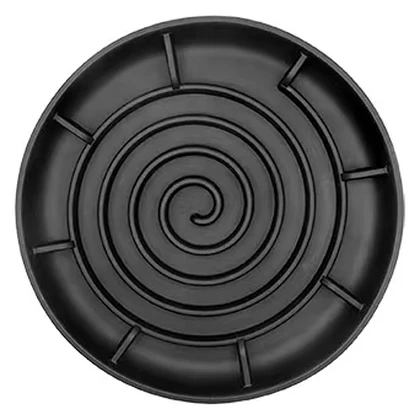
Black
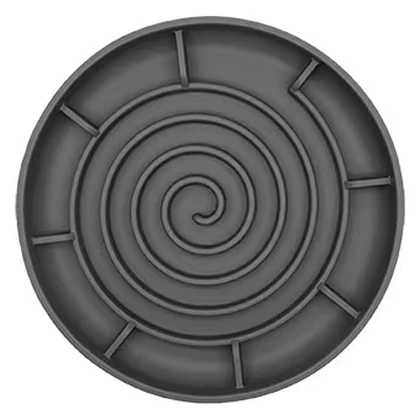
Dark Grey
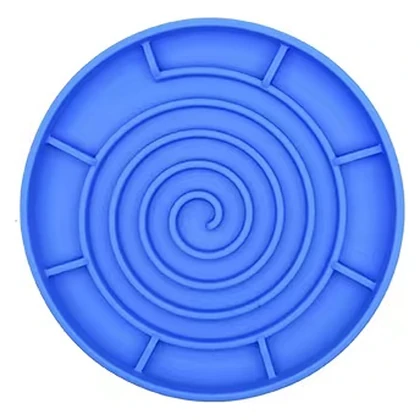
Blue
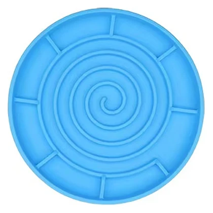
Light Blue
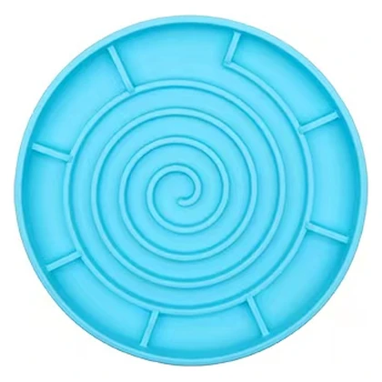
Turquoise
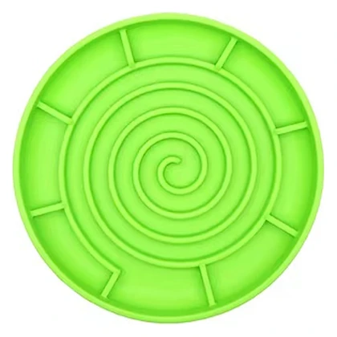
Green
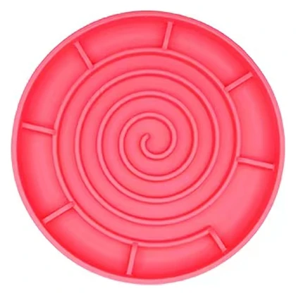
Red
205 x 205 x 30 mm, about 239 g. It suits cats and small to medium dogs.
Yes. The base is covered in moulded suction cups, so once it is pressed down on tile, wood or a feeding mat it does not slide while the pet eats.
The spiral wall winds from the rim into the centre and the radial ribs split the outer ring into pockets, so kibble has to be nosed out a few pieces at a time instead of being taken in one mouthful.
Both. Kibble sits in the spiral channel; wet food and spreads fill the same channel and the rim pockets.
Bowls are bulk packed in export cartons. The carton quantity is confirmed at quotation because it depends on the colour mix you order.
From 10 pcs for stock colours. Custom colours, logo and packaging are quoted per order.
Get wholesale pricing, request a sample, or discuss OEM customization — we reply within 12 hours.
Marvin Bai — Sales Manager
📧 marvin@szqidian.net
📱 +86 159 1412 0274
Shenzhen Qidian Electronic Technology Co., Ltd.